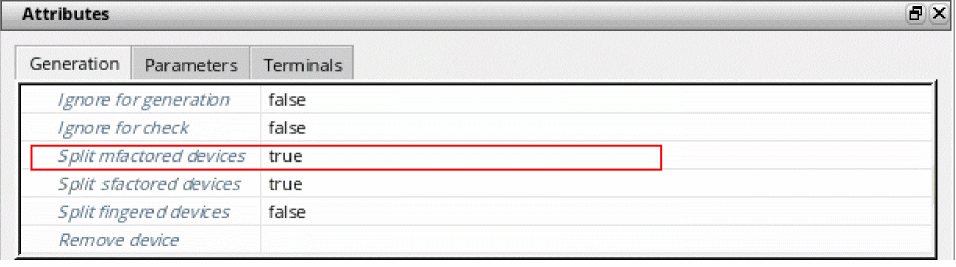

Splitting Mfactored Devices
The Split mfactored devices option controls whether Layout XL places schematic devices with the mfactor property as multiple devices in the layout or as single devices. It overrides the mfactorSplit environment variable, which can also be set on the Generation of the Connectivity form.
Split mfactored devices controls only whether Layout XL generates one device or several devices in the layout view. It does not change the widths of the generated devices.
-
In the Configure Physical Hierarchy window, click the Instances tab or the Cells tab, and select the device in question.
The Split mfactored devices option is checked or unchecked depending on the default value set on the Generation of the Connectivity form.
Split mfactored devices is grayed out if the selected instances do not have themfactorproperty. -
Set the option as required and choose File – Save from the menu bar to save the physical configuration view.
The new setting takes effect the next time you generate or update the layout view.
Related Topics
Return to top